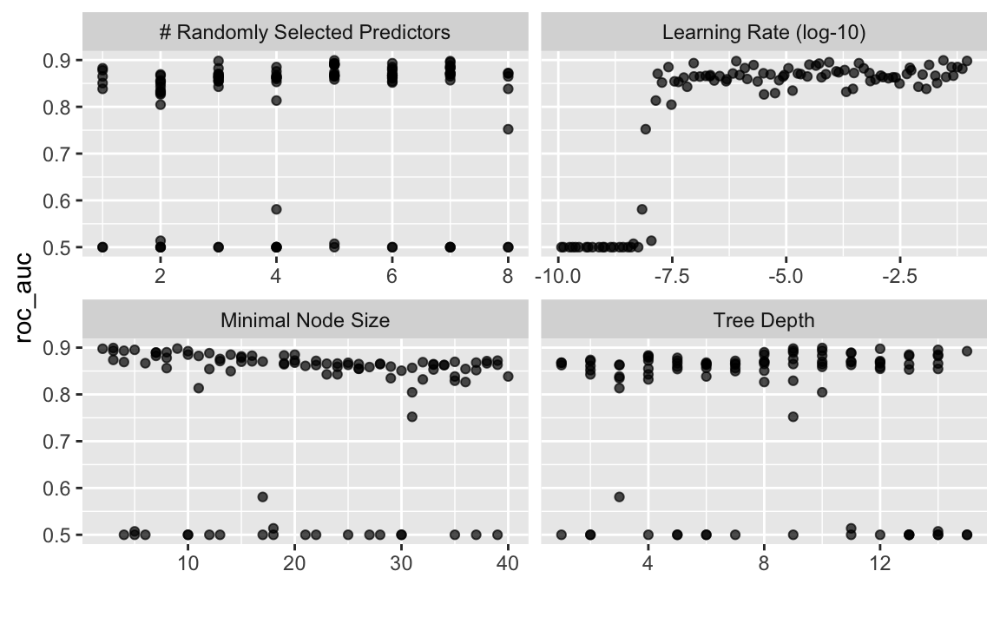

- 1 Objective
- 2 Detect available cores
- 3 Load and prepare data
- 4 Split data into train and test
- 5 Define recipe
- 6 Define model
- 7 Define cross validation scheme
- 8 Define workflow
- 9 Define analysis and validation (oob) set
- 10 Fit the grid
- 11 View results
- 12 Get best model
- 13 Final fit (on train data)
- 14 Predict test data
- 15 Save predictions to disk
- 16 Reproducibility
library(tidyverse) # data wrangling
library(tidymodels) # modelling
library(broom) # tidy model output
library(skimr) # overview on descriptives
library(parallel) # multiple cores -- unix only1 Objective
Predicting the survival in the Titanic disaster. We’ll be using a tidymodels approach.
2 Detect available cores
cores <- parallel::detectCores()
cores
#> [1] 83 Load and prepare data
3.1 Hide details in a function
prepare_data <- function(traindata_url = "https://raw.githubusercontent.com/sebastiansauer/Statistiklehre/main/data/titanic/train.csv",
testdata_url = "https://raw.githubusercontent.com/sebastiansauer/Statistiklehre/main/data/titanic/test.csv") {
# import the data:
train <- read_csv(traindata_url)
test <- read_csv(testdata_url)
# bind both samples into one:
data_raw <-
train %>%
bind_rows(test)
# drop unused variables:
data <-
data_raw %>%
select(-c(Name, Cabin, Ticket))
# convert string to factors:
data2 <-
data %>%
mutate(across(where(is.character), as.factor))
# convert numeric outcome to nominal, to indicate classification:
data2 <- data2 %>%
mutate(Survived = as.factor(Survived))
return(data2)
}data2 <- prepare_data()4 Split data into train and test
That’s kind of a dirty hack …
split_titanic <- initial_time_split(data = data2,
prop = 891/1309)
train <- training(split_titanic)
test <- testing(split_titanic)5 Define recipe
titanic_recipe <-
# define model formula:
recipe(Survived ~ ., data = train) %>%
# Use "ID" etc as ID, not as predictor:
update_role(PassengerId, new_role = "ID") %>%
# impute missing values:
step_knnimpute(all_predictors(), neighbors = 3) %>%
# convert character and factor type variables into dummy variables:
step_dummy(all_nominal(), -all_outcomes()) %>%
# exclude near zero variance predictors:
step_nzv(all_predictors()) %>%
# exclude highly correlated vars:
step_corr(all_predictors()) %>%
# center (set mean to zero):
step_center(all_predictors(), -all_outcomes()) %>%
# set sd=1
step_scale(all_predictors(), -all_outcomes()) 6 Define model
boost_mod <-
boost_tree(mtry = tune(),
min_n = tune(),
learn_rate = tune(),
tree_depth = tune()) %>%
set_engine("xgboost",
num.threads = cores) %>%
set_mode("classification")Translate to xgboost() specs:
translate(boost_mod)
#> Boosted Tree Model Specification (classification)
#>
#> Main Arguments:
#> mtry = tune()
#> min_n = tune()
#> tree_depth = tune()
#> learn_rate = tune()
#>
#> Engine-Specific Arguments:
#> num.threads = cores
#>
#> Computational engine: xgboost
#>
#> Model fit template:
#> parsnip::xgb_train(x = missing_arg(), y = missing_arg(), colsample_bytree = tune(),
#> min_child_weight = tune(), max_depth = tune(), eta = tune(),
#> num.threads = cores, nthread = 1, verbose = 0)7 Define cross validation scheme
train_cv <- vfold_cv(train,
v = 10)Parameters that can be tuned:
boost_mod %>%
parameters()
#> Collection of 4 parameters for tuning
#>
#> identifier type object
#> mtry mtry nparam[?]
#> min_n min_n nparam[+]
#> tree_depth tree_depth nparam[+]
#> learn_rate learn_rate nparam[+]
#>
#> Model parameters needing finalization:
#> # Randomly Selected Predictors ('mtry')
#>
#> See `?dials::finalize` or `?dials::update.parameters` for more information.8 Define workflow
boost_wf <-
workflow() %>%
add_model(boost_mod) %>%
add_recipe(titanic_recipe)9 Define analysis and validation (oob) set
set.seed(42)
val_set <- validation_split(train,
strata = Survived,
prop = 0.80)10 Fit the grid
set.seed(42)
t1 <- Sys.time()
boost_fit <-
boost_wf %>%
tune_grid(val_set,
grid = 100,
control = control_grid(save_pred = TRUE),
metrics = metric_set(roc_auc))
t2 <- Sys.time()
t2 - t1
#> Time difference of 55.77518 secsIt may be worthwhile to save the result object to disk, in order to save computation time:
saveRDS(boost_fit, file = "boost_fit.rds")11 View results
boost_fit %>%
collect_metrics()
#> # A tibble: 100 x 10
#> mtry min_n tree_depth learn_rate .metric .estimator mean n std_err
#> <int> <int> <int> <dbl> <chr> <chr> <dbl> <int> <dbl>
#> 1 3 23 2 6.70e-8 roc_auc binary 0.843 1 NA
#> 2 6 24 14 1.71e-7 roc_auc binary 0.866 1 NA
#> 3 3 26 4 7.00e-4 roc_auc binary 0.855 1 NA
#> 4 2 12 5 2.36e-6 roc_auc binary 0.854 1 NA
#> 5 3 9 9 9.25e-2 roc_auc binary 0.898 1 NA
#> 6 1 30 8 2.04e-2 roc_auc binary 0.851 1 NA
#> 7 7 16 10 1.24e-6 roc_auc binary 0.883 1 NA
#> 8 7 12 11 4.49e-5 roc_auc binary 0.888 1 NA
#> 9 6 15 4 1.91e-4 roc_auc binary 0.879 1 NA
#> 10 5 23 6 3.46e-7 roc_auc binary 0.866 1 NA
#> # … with 90 more rows, and 1 more variable: .config <chr>boost_fit %>%
show_best(metric = "roc_auc")
#> # A tibble: 5 x 10
#> mtry min_n tree_depth learn_rate .metric .estimator mean n std_err
#> <int> <int> <int> <dbl> <chr> <chr> <dbl> <int> <dbl>
#> 1 5 3 10 2.80e-2 roc_auc binary 0.899 1 NA
#> 2 3 9 9 9.25e-2 roc_auc binary 0.898 1 NA
#> 3 7 2 12 8.02e-7 roc_auc binary 0.898 1 NA
#> 4 7 5 14 8.71e-5 roc_auc binary 0.895 1 NA
#> 5 5 4 9 9.33e-8 roc_auc binary 0.893 1 NA
#> # … with 1 more variable: .config <chr>autoplot(boost_fit)
12 Get best model
boost_best <-
boost_fit %>%
select_best(metric = "roc_auc")
boost_best
#> # A tibble: 1 x 5
#> mtry min_n tree_depth learn_rate .config
#> <int> <int> <int> <dbl> <chr>
#> 1 5 3 10 0.0280 Preprocessor1_Model06213 Final fit (on train data)
boost_final_wf <-
boost_wf %>%
finalize_workflow(boost_best)So, here is the best model:
boost_final_wf
#> ══ Workflow ════════════════════════════════════════════════════════════════════
#> Preprocessor: Recipe
#> Model: boost_tree()
#>
#> ── Preprocessor ────────────────────────────────────────────────────────────────
#> 6 Recipe Steps
#>
#> ● step_knnimpute()
#> ● step_dummy()
#> ● step_nzv()
#> ● step_corr()
#> ● step_center()
#> ● step_scale()
#>
#> ── Model ───────────────────────────────────────────────────────────────────────
#> Boosted Tree Model Specification (classification)
#>
#> Main Arguments:
#> mtry = 5
#> min_n = 3
#> tree_depth = 10
#> learn_rate = 0.0280318587584122
#>
#> Engine-Specific Arguments:
#> num.threads = cores
#>
#> Computational engine: xgboostLet us fit this model to the train data:
last_boost_mod <-
boost_final_wf %>%
fit(data = train)
#> [17:09:04] WARNING: amalgamation/../src/learner.cc:516:
#> Parameters: { num_threads } might not be used.
#>
#> This may not be accurate due to some parameters are only used in language bindings but
#> passed down to XGBoost core. Or some parameters are not used but slip through this
#> verification. Please open an issue if you find above cases.last_boost_mod
#> ══ Workflow [trained] ══════════════════════════════════════════════════════════
#> Preprocessor: Recipe
#> Model: boost_tree()
#>
#> ── Preprocessor ────────────────────────────────────────────────────────────────
#> 6 Recipe Steps
#>
#> ● step_knnimpute()
#> ● step_dummy()
#> ● step_nzv()
#> ● step_corr()
#> ● step_center()
#> ● step_scale()
#>
#> ── Model ───────────────────────────────────────────────────────────────────────
#> ##### xgb.Booster
#> raw: 33 Kb
#> call:
#> xgboost::xgb.train(params = list(eta = 0.0280318587584122, max_depth = 10L,
#> gamma = 0, colsample_bytree = 0.625, min_child_weight = 3L,
#> subsample = 1), data = x$data, nrounds = 15, watchlist = x$watchlist,
#> verbose = 0, objective = "binary:logistic", num.threads = 8L,
#> nthread = 1)
#> params (as set within xgb.train):
#> eta = "0.0280318587584122", max_depth = "10", gamma = "0", colsample_bytree = "0.625", min_child_weight = "3", subsample = "1", objective = "binary:logistic", num_threads = "8", nthread = "1", validate_parameters = "TRUE"
#> xgb.attributes:
#> niter
#> callbacks:
#> cb.evaluation.log()
#> # of features: 8
#> niter: 15
#> nfeatures : 8
#> evaluation_log:
#> iter training_error
#> 1 0.236813
#> 2 0.164983
#> ---
#> 14 0.130191
#> 15 0.12794613.1 Fit final workflow (on test data)
set.seed(42)
last_boost_fit <-
last_boost_mod %>%
last_fit(split_titanic)14 Predict test data
boost_preds <-
last_boost_fit %>%
collect_predictions() %>%
select(-Survived) %>%
select(PassengerID = .row, Survived = .pred_class) glimpse(boost_preds)
#> Rows: 418
#> Columns: 2
#> $ PassengerID <int> 892, 893, 894, 895, 896, 897, 898, 899, 900, 901, 902, 90…
#> $ Survived <fct> 0, 1, 0, 0, 1, 0, 1, 0, 1, 0, 0, 0, 1, 0, 1, 1, 0, 0, 1, …15 Save predictions to disk
boost_preds %>%
write_csv(file = "boost_preds.csv")16 Reproducibility
#> ─ Session info ───────────────────────────────────────────────────────────────────────────────────────────────────────
#> setting value
#> version R version 4.0.2 (2020-06-22)
#> os macOS Catalina 10.15.7
#> system x86_64, darwin17.0
#> ui X11
#> language (EN)
#> collate en_US.UTF-8
#> ctype en_US.UTF-8
#> tz Europe/Berlin
#> date 2020-12-14
#>
#> ─ Packages ───────────────────────────────────────────────────────────────────────────────────────────────────────────
#> package * version date lib source
#> assertthat 0.2.1 2019-03-21 [1] CRAN (R 4.0.0)
#> backports 1.2.0 2020-11-02 [1] CRAN (R 4.0.2)
#> blogdown 0.21 2020-10-11 [1] CRAN (R 4.0.2)
#> bookdown 0.21 2020-10-13 [1] CRAN (R 4.0.2)
#> broom 0.7.2 2020-10-20 [1] CRAN (R 4.0.2)
#> callr 3.5.1 2020-10-13 [1] CRAN (R 4.0.2)
#> cellranger 1.1.0 2016-07-27 [1] CRAN (R 4.0.0)
#> cli 2.2.0 2020-11-20 [1] CRAN (R 4.0.2)
#> codetools 0.2-16 2018-12-24 [2] CRAN (R 4.0.2)
#> colorspace 2.0-0 2020-11-11 [1] CRAN (R 4.0.2)
#> crayon 1.3.4 2017-09-16 [1] CRAN (R 4.0.0)
#> DBI 1.1.0 2019-12-15 [1] CRAN (R 4.0.0)
#> dbplyr 2.0.0 2020-11-03 [1] CRAN (R 4.0.2)
#> desc 1.2.0 2018-05-01 [1] CRAN (R 4.0.0)
#> devtools 2.3.2 2020-09-18 [1] CRAN (R 4.0.2)
#> digest 0.6.27 2020-10-24 [1] CRAN (R 4.0.2)
#> dplyr * 1.0.2 2020-08-18 [1] CRAN (R 4.0.2)
#> ellipsis 0.3.1 2020-05-15 [1] CRAN (R 4.0.0)
#> evaluate 0.14 2019-05-28 [1] CRAN (R 4.0.0)
#> fansi 0.4.1 2020-01-08 [1] CRAN (R 4.0.0)
#> forcats * 0.5.0 2020-03-01 [1] CRAN (R 4.0.0)
#> fs 1.5.0 2020-07-31 [1] CRAN (R 4.0.2)
#> generics 0.1.0 2020-10-31 [1] CRAN (R 4.0.2)
#> ggplot2 * 3.3.2 2020-06-19 [1] CRAN (R 4.0.0)
#> glue 1.4.2 2020-08-27 [1] CRAN (R 4.0.2)
#> gtable 0.3.0 2019-03-25 [1] CRAN (R 4.0.0)
#> haven 2.3.1 2020-06-01 [1] CRAN (R 4.0.0)
#> hms 0.5.3 2020-01-08 [1] CRAN (R 4.0.0)
#> htmltools 0.5.0 2020-06-16 [1] CRAN (R 4.0.0)
#> httr 1.4.2 2020-07-20 [1] CRAN (R 4.0.2)
#> jsonlite 1.7.1 2020-09-07 [1] CRAN (R 4.0.2)
#> knitr 1.30 2020-09-22 [1] CRAN (R 4.0.2)
#> lifecycle 0.2.0 2020-03-06 [1] CRAN (R 4.0.0)
#> lubridate 1.7.9.2 2020-11-13 [1] CRAN (R 4.0.2)
#> magrittr 2.0.1 2020-11-17 [1] CRAN (R 4.0.2)
#> memoise 1.1.0 2017-04-21 [1] CRAN (R 4.0.0)
#> modelr 0.1.8 2020-05-19 [1] CRAN (R 4.0.0)
#> munsell 0.5.0 2018-06-12 [1] CRAN (R 4.0.0)
#> pillar 1.4.7 2020-11-20 [1] CRAN (R 4.0.2)
#> pkgbuild 1.1.0 2020-07-13 [1] CRAN (R 4.0.2)
#> pkgconfig 2.0.3 2019-09-22 [1] CRAN (R 4.0.0)
#> pkgload 1.1.0 2020-05-29 [1] CRAN (R 4.0.0)
#> prettyunits 1.1.1 2020-01-24 [1] CRAN (R 4.0.0)
#> processx 3.4.5 2020-11-30 [1] CRAN (R 4.0.2)
#> ps 1.4.0 2020-10-07 [1] CRAN (R 4.0.2)
#> purrr * 0.3.4 2020-04-17 [1] CRAN (R 4.0.0)
#> R6 2.5.0 2020-10-28 [1] CRAN (R 4.0.2)
#> Rcpp 1.0.5 2020-07-06 [1] CRAN (R 4.0.2)
#> readr * 1.4.0 2020-10-05 [1] CRAN (R 4.0.2)
#> readxl 1.3.1 2019-03-13 [1] CRAN (R 4.0.0)
#> remotes 2.2.0 2020-07-21 [1] CRAN (R 4.0.2)
#> reprex 0.3.0 2019-05-16 [1] CRAN (R 4.0.0)
#> rlang 0.4.9 2020-11-26 [1] CRAN (R 4.0.2)
#> rmarkdown 2.5 2020-10-21 [1] CRAN (R 4.0.2)
#> rprojroot 2.0.2 2020-11-15 [1] CRAN (R 4.0.2)
#> rstudioapi 0.13.0-9000 2020-12-09 [1] Github (rstudio/rstudioapi@4baeb39)
#> rvest 0.3.6 2020-07-25 [1] CRAN (R 4.0.2)
#> scales 1.1.1 2020-05-11 [1] CRAN (R 4.0.0)
#> sessioninfo 1.1.1 2018-11-05 [1] CRAN (R 4.0.0)
#> stringi 1.5.3 2020-09-09 [1] CRAN (R 4.0.2)
#> stringr * 1.4.0 2019-02-10 [1] CRAN (R 4.0.0)
#> testthat 3.0.0 2020-10-31 [1] CRAN (R 4.0.2)
#> tibble * 3.0.4 2020-10-12 [1] CRAN (R 4.0.2)
#> tidyr * 1.1.2 2020-08-27 [1] CRAN (R 4.0.2)
#> tidyselect 1.1.0 2020-05-11 [1] CRAN (R 4.0.0)
#> tidyverse * 1.3.0 2019-11-21 [1] CRAN (R 4.0.0)
#> usethis 1.6.3 2020-09-17 [1] CRAN (R 4.0.2)
#> vctrs 0.3.5 2020-11-17 [1] CRAN (R 4.0.2)
#> withr 2.3.0 2020-09-22 [1] CRAN (R 4.0.2)
#> xfun 0.19 2020-10-30 [1] CRAN (R 4.0.2)
#> xml2 1.3.2 2020-04-23 [1] CRAN (R 4.0.0)
#> yaml 2.2.1 2020-02-01 [1] CRAN (R 4.0.0)
#>
#> [1] /Users/sebastiansaueruser/Rlibs
#> [2] /Library/Frameworks/R.framework/Versions/4.0/Resources/library